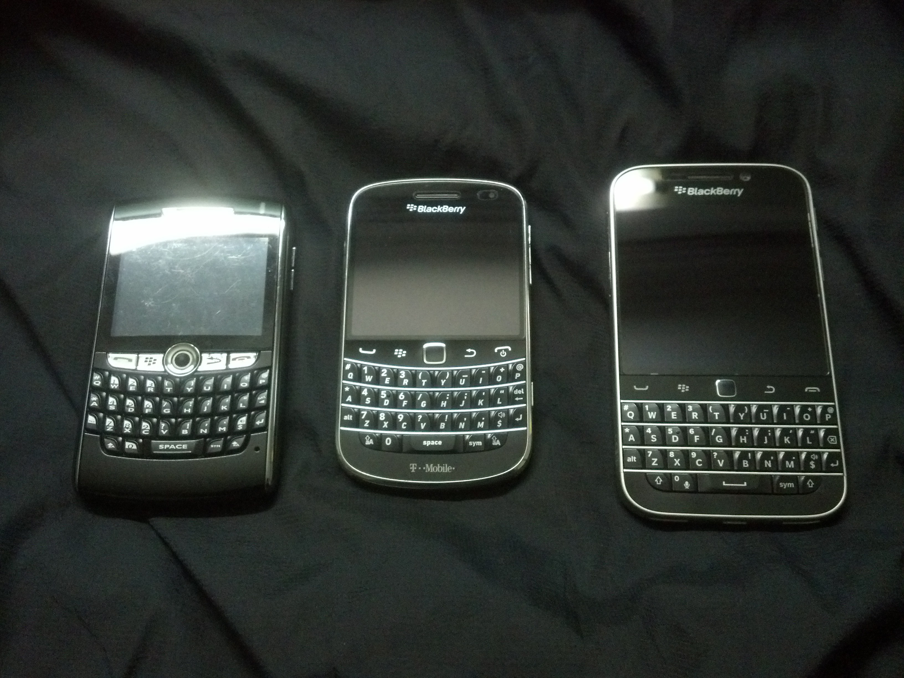

BlackBerry is a line of smartphones, tablets, and services originally designed and marketed by Canadian company BlackBerry Limited (formerly known as Research In Motion, or RIM).
BlackBerry products are currently formally designed, manufactured, and marketed by Chinese company TCL Communication (under the brand of BlackBerry Mobile), Indonesian company BB Merah Putih, and Indian company Optiemus Infracom for the global, Indonesian, and South Asian markets (respectively) using the BlackBerry brand under license.